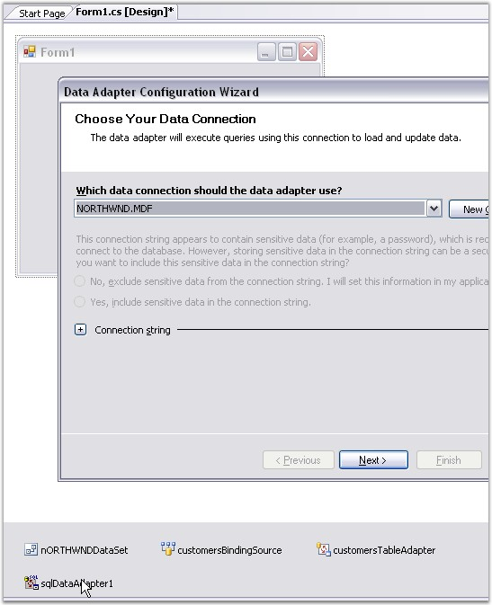
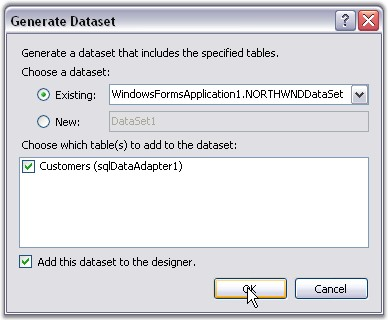
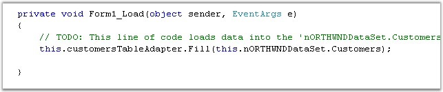
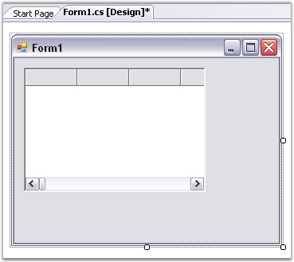
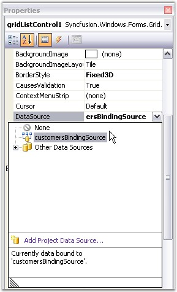
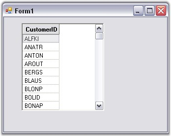

With the designer, all you have to do is drag the control onto the form, size it and then set the desired properties, assuming you have a data source ready. If you do not have a data source ready, then create one by using the steps listed below.
To Create a Data Source
1. Drag an SqlDataAdapter from the Data tab of the Toolbox onto the form. Follow the steps in the wizard to select the database and SQL query used to generate the table.

Figure 421: Data Adapter Configuration Wizard
2. Click the SqlAdapter in the components tray, with the right mouse button and generate a dataset for this adapter, by just taking the defaults.

Figure 422: Generating Data Set
3. In the Form_Load event handler, Fill method will be called automatically for this SqlDataAdapter, by passing the dataset that is generated in the previous step.

Figure 423: Fill method called automatically in the Form_Load Event Handler
4. Drag a GridListControl object from your tool box and drop it onto the form.

Figure 424: Grid List control dragged from the toolbox onto the Form
5. Size and position it.
6. Go to Properties dialog of this Grid List control and set the DataSource property of this control to an appropriate object.

Figure 425: Data Source set by using the DataSource Property
7. Run the application. Following is the output.

Figure 426: Grid List control created Through Code
This designer-created data source is now available for use as the data source member of the Grid List control. For a complete step-by-step tutorial on how to use the designer to create a data source, see the Grid Data Bound Grid tutorial.